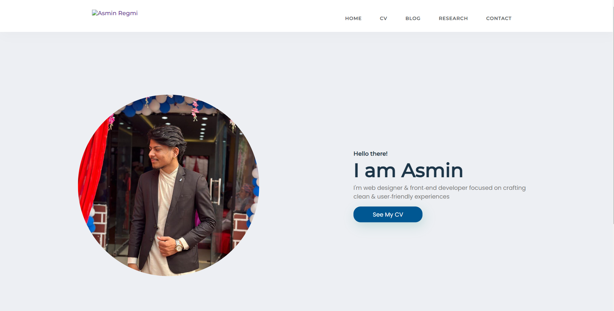
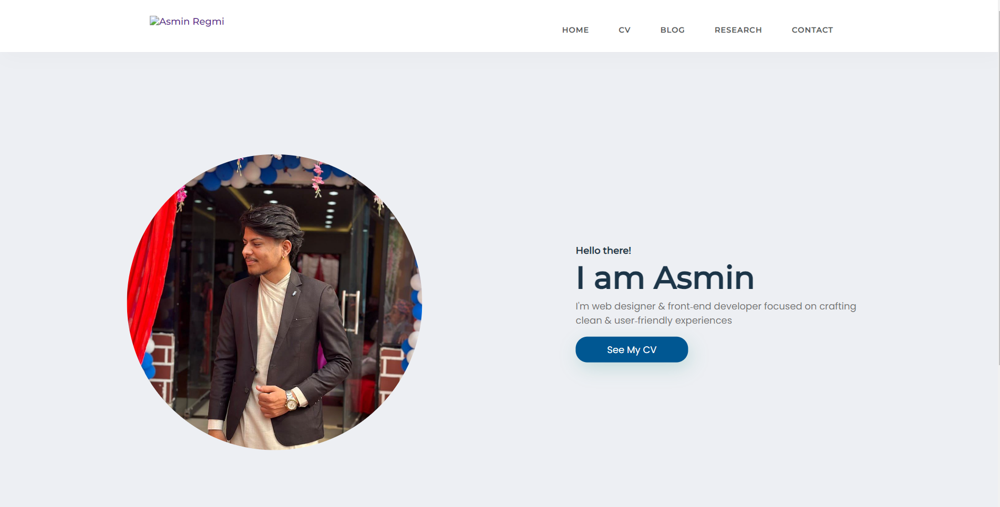

Research section
Research on Home Section
 

Basically the home page of this website is made simple and neat. Before making this site i did some research to have some idea about the design and i found this website which i have shown above in the left side. To make this page i used HTML and CSS. I have used div component frequently to divide the sections accordingly and tried to make the page similar like the shown in left. With the help of flex in CSS i managed to build the navbar and using basic HTML CSS this page was made.
Research on CV Section
So for this page, I haven't done much research cause everything was my Own idea and it was in my head but i checked some templates for first about me section and found a perfect one i liked this design because of its design where image was on one side and text on the other so i started doing and i also have used table component to make a table for education details and used flex to make those skill cards. Overall this page was made quicker because the components used in this page like tables,flex etc is used frquently by me.
Research on Blog Section
Blog section was the easiest page to make because one CSS as enough for all section. we only used image and text for this section. To develop the page i took some idea from the template show in the left side and tried to make something similar like that by placing pictures and text in middle. Also i did some research about the topic of blog about key points one the topic.
Research on Contact Section
Contact page was the most challenging page to create it almost took me a day. it was a bit harder than i thought so to make this page first i did some research regarding this page and found video on Online tutorials channel and got some idea from there and for design of this page i found the tempate which is shown above in left side and tried to make similar box like that and i designed input similar to that page in this page i have used form and powered it with JavaScript.
Research on Footer Section
To make the footer section firstly i tried to develop my section like the above show picture on left but while making there wasn't enough section in my page to make like that so i decided to put only my social media platforms in footer and with the help of anchor tag and font awesome icons i made the footer section.
Research on JavaScript
To give some JavaScript magic in the contact form after making contact page i rewatched the videos of our classroom and done some research in w3schools website to get more knowledge about form validataion and watched more youtube videos about different ways of showing pop up if form is not validated.